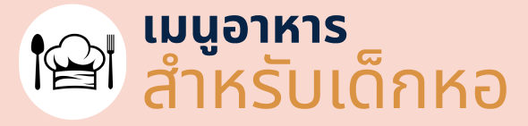
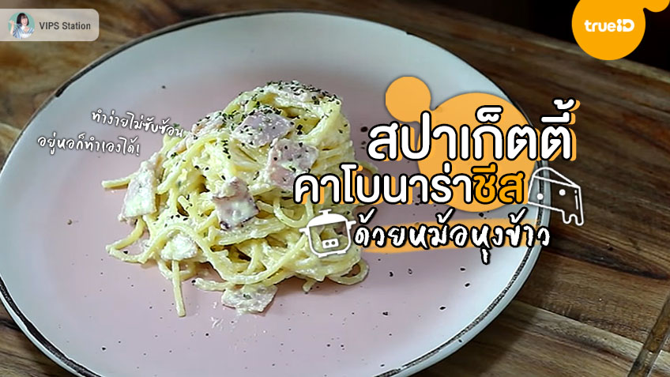

.
หน้าหลัก
เมนูอาหาร
เครื่องครัวจำเป็น
เกี่ยวกับฉัน
ติดต่อฉัน

ไส้กรอกพันหมี่
ส่วนผสม
ไส้กรอกสีแดง
เส้นบะหมี่กลม
ไม้เสียบลูกชิ้น
น้ำมันปาล์ม (สำหรับทอด)
ส่วนผสม น้ำจิ้มไส้กรอก
น้ำตาลปี๊บ 1/2 ถ้วยตวง
น้ำมะขามเปียก 1/2 ถ้วยตวง
น้ำตาลทรายขาว 2 ช้อนโต๊ะ
น้ำเปล่า 2-3 ช้อนโต๊ะ
ซอสพริก 2 ช้อนโต๊ะ
พริกขี้หนูแดงสด 6-7 เม็ด
กระเทียมสด 8-9 กลีบ
กระเทียมโทนดอง 3 เม็ด
น้ำกระเทียมดอง 2 ช้อนโต๊ะ
ผักชี(สับหยาบ) 1/2 ถ้วยตวง
วิธีทำ ไส้กรอกพันหมี่
1.นำไส้กรอกแดงมาหั่นปลาย เตรียมไว้
2.นำบะหมี่เส้นกลม จับปลายประมาณ 2-3 เส้น จุ่มน้ำให้ปลายเส้นติดกัน จากนั้นนำมาพันตรงกลางของไส้กรอกแดงให้แน่น
3.ตั้งกระทะ ใส่น้ำมันลงไป รอจนน้ำมันร้อน นำไส้กรอกลงไปทอด
4.รอจนไส้กรอกพองได้ที่ นำตักขึ้นมาพักไว้ เป็นอันเสร็จ
วิธีทำ น้ำจิ้มมะขาม
1.นำกระเทียม พริก กระเทียมโทน มาปั่นให้เข้ากัน
2.เทน้ำมะขามเปียกลงไปในหม้อ ตามด้วยน้ำตาลปี๊ป น้ำปลา น้ำตาลทราย
3.เปิดไฟ เคี่ยวให้ส่วนผสมละลายเข้ากัน เคี่ยวด้วยไฟอ่อนไปเรื่อยๆ ให้มีความหนืด
4.ปิดแก๊ส ใส่พริกกระเทียมลงไป ตามด้วยน้ำกระเทียมโทนดอง
5.ซอยผักชีลงไป เป็นอันเสร็จ
กลับหน้าแรก
>
ติดต่อฉัน
.
อีเมล
หัวข้อ
รายละเอียด